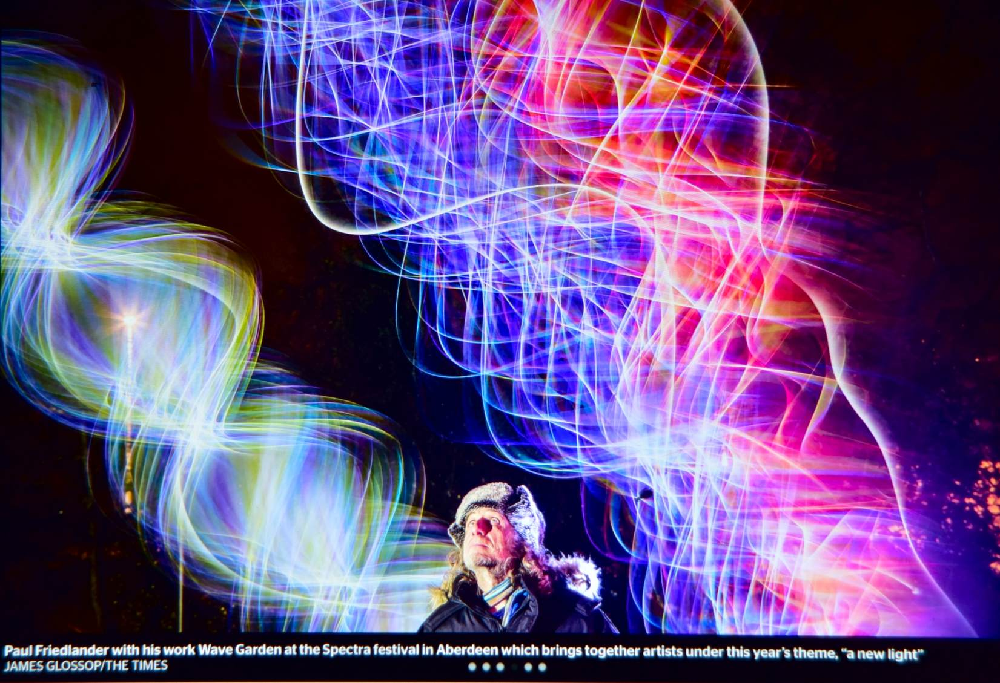

Aberdeen 2017 |
 |
Looking at the small screen on the back of his large camera, the photographer said “You look like a man trying to communicate with aliens.” “Perfect” I said “You have captured the real me, a true portrait.”
The next day this picture appeared in the Times.